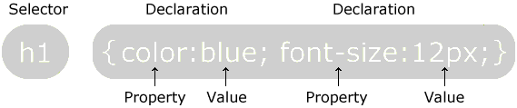

CSS
TutoriaL
Introduction
CSS(Cascading style sheet) is a separation of style from structure. It gives the creator potentially full control over every
item in the page.
CSS is used for describing how the HTML elements will be displayed on the webpage. The Cascading style sheet
saves a lot of time and can be used to control multiple webpages at once.
On the other side several CSS files can be used just for one page.CSS level 1 was released in 1997
Syntax
A CSS rule-set consists of a selector and a declaration block.

The selector points to the element you want to add style.
The declaration block contains declarations separated by semicolons.
Each of them includes a property name and a value, separated by a colon.
The CSS declarations always end with semicolons, the declarations blocks are surrounded by curly braces.
There are 3 ways to insert CSS: External, Internal and inline. The external type is used the most.
Background property
The background color is used to fill the background with color and there are many ways to display it.
The background image provides the user with several functions, one of which is to add a background image.
You can also combine it with the background color if your image does not fit. There are different ways to
upload images. If your image is in the same folder you can just write the name with the type at the end.
If not you have to write down the exact location of the image.
With background repeat you can choose whether your image to repeat horizontally and vertically until it fills
all the space. If not you can choose your image not to repeat or to repeat only horizontally or only vertically.
Finally with background position you can choose exactly where you want your image to appear by setting cordinates with
pixels(px) or percentages(%).
Margins and Paddings
Margins and paddings are two of the most used properties in CSS. The margin tag refers to the space
outside of an element, whereas the padding is the exact opposite.
The easiest way to understand the margins and the paddings is to imagine a box. The thing inside the box
is the box element. Between the border and box element is the padding and the space outside the box is the margin.

Height&Width
Height and width properties are used to set the size of elements. They can be set to auto, in this situation the
browser calculates their size. In order to set size you can choose between setting with percentages(%) or pixels(px).

It is a good practise to use max-width, while creating web pages, because it improves the way of the browser handling small windows. It's important to remember that the max-width property overrides the width property.
Text Styling
There are a lot of ways to format text in CSS. We can start with text align. With ths property
you can align your text to right, center or left.It is widely used in CSS.
The next property is the text color. With this one you can change your text color to every color
that you like.

In addition you can set your text not to have any decoration or you can choose between underlining or upperlining.
Also there is an option to capitilize your text, or to transform it to upper or lowecase.